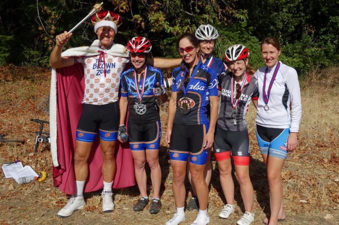

Low-Key Hillclimbs Aggregate Results:
Black Rd - Castle Rock
generated Fri Nov 4 10:34:14 PDT 2016
|
|  |
| 2013 week 5: The royal awards ceremony: top 5 women (Bill Bushnell) |
Results are listed here from the Low-Key archives, sorted by time for each climb. Some years start and/or finish time differ slightly, such as
with Kings Mt Road where after 1995 the start moved from Entrance Way to Greer.
Results are ranked by time first, score second.
Score is calculated using a simple percent-of-median-speed
formula, with time adjustments for division. These scores will generally differ from those calculated in the results for that particular year, since
the scoring scheme has evolved. Tandems are split between 1998, when they were counted as single participants, and other years, when the individual
riders have been counted separately
Results for Men
| rank | time | score | rider | cat | team | year | week | code |
|---|
| 1 | 36:38 | 122.577 | Carl Nielson | 50+ | Sr's & Mr's of No Mercy | 2013 | 5 | |
| 2 | 36:57 | 121.527 | jacob berkman | 35+ | Team Mike's Bikes p/b Incase | 2013 | 5 | |
| 3 | 36:59 | 121.417 | Stefano Profumo | 35+ | Bike Trip/Symantec | 2013 | 5 | |
| 4 | 37:38 | 119.320 | Bill Laddish | 40+ | Team CVC | 2013 | 5 | |
| 5 | 37:45 | 118.951 | Chris Furgiuele | 40+ | Studio Velo Racing | 2013 | 5 | |
| 6 | 38:05 | 117.910 | Josh Pizzica | 35+ | Gene-Solve/Etxea | 2013 | 5 | |
| 7 | 38:24 | 116.938 | Todd Markelz | 35+ | Google | 2013 | 5 | |
| 8 | 38:35 | 116.382 | Rich McLovin Brown | 35+ | The Brown Zone | 2013 | 5 | |
| 9 | 38:39 | 116.182 | Joe Sullivan | 35+ | San Jose Bike Club | 2013 | 5 | |
| 10 | 38:40 | 116.131 | Chris Evans | 30+ | Pen Velo/Pomodoro | 2013 | 5 | |
| 11 | 38:57 | 115.287 | Nils Tikkanen | Honey Badger | Bike Trip/Symantec | 2013 | 5 | |
| 12 | 39:01 | 115.090 | Robert Easley | 45+ | Sr's & Mr's of No Mercy | 2013 | 5 | |
| 13 | 39:13 | 114.503 | Rich Hill | 45+ | LGBRC | 2013 | 5 | |
| 14 | 39:17 | 114.308 | Rob Nast | 50+ | | 2013 | 5 | |
| 15 | 39:22 | 114.066 | Kevin Susco | 55+ | Sr's & Mr's of No Mercy | 2013 | 5 | |
| 16 | 39:42 | 113.109 | Graham Abra | | Pen Velo/Pomodoro | 2013 | 5 | |
| 17 | 40:09 | 111.841 | Andy Crews | 40+ | Diablo | 2013 | 5 | |
| 18 | 40:30 | 110.874 | James Porter | Scotty I Need More Power | Western Wheelers | 2013 | 5 | |
| 19 | 41:01 | 109.478 | Alexander Komlik | 45+ | San Jose Bike Club | 2013 | 5 | |
| 20 | 41:12 | 108.991 | Juan Navarro | 35+ | Gene-Solve/Etxea | 2013 | 5 | |
| 21 | 41:22 | 108.552 | Kevin Keenan | 55+ | Sr's & Mr's of No Mercy | 2013 | 5 | |
| 22 | 41:30 | 108.203 | Michael Busha | 30+ | Diablo | 2013 | 5 | |
| 23 | 41:33 | 108.073 | Mark King | 45+ | Equipe Flamme Rouge | 2013 | 5 | |
| 24 | 41:36 | 107.943 | Todd Studenicka | 45+ | San Jose Bike Club | 2013 | 5 | |
| 25 | 41:40 | 107.770 | Miro Miklos | 30+ | | 2013 | 5 | |
| 26 | 41:52 | 107.255 | Eddie Santos | 25+ | Bike Trip/Symantec | 2013 | 5 | |
| 27 | 42:17 | 106.198 | Joe Fant | 50+ | The Brown Zone | 2013 | 5 | |
| 28 | 42:43 | 105.121 | Blue Brown | 35+ | The Brown Zone | 2013 | 5 | |
| 29 | 42:44 | 105.080 | J* Diesel | 35+ | Eden Bicycles | 2013 | 5 | |
| 30 | 42:53 | 104.712 | Habañero Brown | Wheel Horse | The Brown Zone | 2013 | 5 | |
| 31 | 43:03 | 104.307 | Dino Brown | 50+ | The Brown Zone | 2013 | 5 | |
| 32 | 43:22 | 103.545 | Bill Harkola | 55+ | Pen Velo/Pomodoro | 2013 | 5 | |
| 33 | 43:23 | 103.506 | bogdan marian | 30+ | | 2013 | 5 | |
| 34 | 43:28 | 103.307 | Bryn Dole | 40+ | Low-Key | 2013 | 5 | |
| 35 | 43:40 | 102.834 | Klaus Fleischmann | 45+ | | 2013 | 5 | |
| 36 | 43:48 | 102.521 | Russ McCrary | 55+ | Sr's & Mr's of No Mercy | 2013 | 5 | |
| 37 | 43:53 | 102.326 | John Richardson | 60+ | Pen Velo/Pomodoro | 2013 | 5 | |
| 38 | 43:58 | 102.132 | Joe Karbowski | 35+ | Team Joe Karbowski | 2013 | 5 | |
| 39 | 44:14 | 101.517 | Michael Kowalchuk | 25+ | Google | 2013 | 5 | |
| 40 | 44:24 | 101.136 | Terrance Kloeckl | 50+ | Last Chosen | 2013 | 5 | |
| 41 | 44:27 | 101.022 | Peter Ingram | 55+ | Steely Man | 2013 | 5 | |
| 42 | 44:41 | 100.494 | Ryan Powell | | Team Joe Karbowski | 2013 | 5 | |
| 43 | 44:48 | 100.233 | Brandon Smith | 25+ | Team CVC | 2013 | 5 | |
| 44 | 44:55 | 99.972 | Doug Reynolds | 60+ | NightRiders | 2013 | 5 | |
| 45 | 45:10 | 99.419 | Jonas Jacobson | 30+ | | 2013 | 5 | |
| 46 | 45:39 | 98.366 | Mike Urbina | 50+ | NightRiders | 2013 | 5 | |
| 47 | 46:05 | 97.441 | Bart Niechwiej | 35+ | Google | 2013 | 5 | |
| 48 | 46:30 | 96.568 | Martin Hyland | 55+ | Diablo | 2013 | 5 | |
| 49 | 46:31 | 96.534 | Mihai R. | 30+ | Google | 2013 | 5 | |
| 50 | 46:40 | 96.223 | Bob Scott | Male 40+ | Pen Velo/Pomodoro | 2013 | 5 | |
| 51 | 46:50 | 95.881 | Rick Ferrell | 55+ | | 2013 | 5 | |
| 52 | 47:05 | 95.372 | Scott Byer | 45+ | Google | 2013 | 5 | |
| 53 | 47:25 | 94.701 | Philip Clark | 30+ | Google | 2013 | 5 | |
| 54 | 47:39 | 94.237 | Doug MacPherson | 40+ | Pen Velo/Pomodoro | 2013 | 5 | |
| 55 | 47:42 | 94.139 | Kent Sasaki | 45+ | | 2013 | 5 | |
| 56 | 47:47 | 93.975 | Tim Irvine | 40+ | LGBRC | 2013 | 5 | |
| 57 | 47:48 | 93.942 | StephensWilcox | 45+ | | 2013 | 5 | |
| 58 | 47:49 | 93.909 | Giles Douglas | 40 TODAY | Google | 2013 | 5 | |
| 59 | 47:50 | 93.876 | Will von Kaenel | 55+ | LGBRC | 2013 | 5 | |
| 60 | 47:52 | 93.811 | Curtis Kimble | 45+ | Red Peloton | 2013 | 5 | |
| 61 | 48:01 | 93.518 | Nic Brummell | 50+ | Atlas | 2013 | 5 | |
| 62 | 48:03 | 93.453 | Franz Kelsch | 65+ | NightRiders | 2013 | 5 | |
| 63 | 48:27 | 92.681 | John Koslosky | 45+ | Team CVC | 2013 | 5 | |
| 64 | 48:36 | 92.395 | Larry Klein | 50+ | Grumpy Old Men (GOM) | 2013 | 5 | |
| 65 | 49:07 | 91.423 | Alan Dreyfuss | 60+ | | 2013 | 5 | |
| 66 | 50:07 | 89.599 | Frank Drobot | 60+ | Team Djament | 2013 | 5 | |
| 67 | 50:10 | 89.510 | David Vrane | 45+ | Sr's & Mr's of No Mercy | 2013 | 5 | |
| 68 | 50:20 | 89.214 | Steve Connelly | 55+ | | 2013 | 5 | |
| 69 | 50:37 | 88.714 | Hani Juha | 40+ | Menlo Bike Club | 2013 | 5 | |
| 70 | 50:52 | 88.278 | Ray Smith | 55+ | Team CVC | 2013 | 5 | |
| 70 | 50:52 | 88.278 | Greg Holley | 45+ | | 2013 | 5 | |
| 72 | 51:12 | 87.703 | Thomas Preisler | 55+ | LGBRC | 2013 | 5 | |
| 73 | 51:47 | 86.715 | Pierre Doussiere | 50+ | My LowRacer & Myself | 2013 | 5 | |
| 74 | 52:13 | 85.996 | Frank Paysen | 50+ | autonomous masochist | 2013 | 5 | |
| 75 | 52:18 | 85.859 | Brandon Iles | 30+ | Google | 2013 | 5 | |
| 76 | 52:35 | 85.396 | Tom Peacock | Virgin | Atlas | 2013 | 5 | |
| 77 | 52:40 | 85.261 | Uli Haug | 45+ | | 2013 | 5 | |
| 78 | 52:57 | 84.805 | Walter Wang | 40+ | | 2013 | 5 | |
| 79 | 53:29 | 83.959 | Chris Land | 50+ | Menlo Bike Club | 2013 | 5 | |
| 80 | 53:37 | 83.750 | Matthew Larson | 4 | | 2013 | 5 | |
| 81 | 53:46 | 83.517 | Ramon Periquet | 50+ | Team CVC | 2013 | 5 | L |
| 82 | 53:47 | 83.491 | Bernard Bell | 50+ | | 2013 | 5 | |
| 83 | 53:56 | 83.259 | Richard Contreras | | Rhus | 2013 | 5 | |
| 84 | 55:05 | 81.520 | Stephen Fong | 0 | CyclePath Racing | 2013 | 5 | |
| 85 | 55:06 | 81.496 | Koushik Sampath | 25+ | LGBRC | 2013 | 5 | |
| 86 | 55:12 | 81.348 | Steve Mallard | | LGBRC | 2013 | 5 | |
| 87 | 55:33 | 80.836 | Gregory P Smith | 35+ | Zombie Raccoon | 2013 | 5 | |
| 88 | 56:36 | 79.336 | Kevin M. Smith | 50+ | LGBRC | 2013 | 5 | |
| 89 | 57:55 | 77.532 | Ed Miller | 70+ | SLACer | 2013 | 5 | |
| 90 | 62:09 | 72.251 | Ryan Chaney | 10+ | Mama Hips | 2013 | 5 | |
| 91 | 66:38 | 67.390 | Rick Nolthenius | 60+ | | 2013 | 5 | |
| 92 | 66:40 | 67.356 | Tom Jakaby | 55+ | BUYCELL | 2013 | 5 | |
L : late start
Results for Hybrid Electric
| rank | time | score | rider | cat | team | year | week | code |
|---|
| 1 | 23:47 | 109.707 | Bill Bushnell | Hors | Low-Key | 2013 | 5 | |
Results for Women
| rank | time | score | rider | cat | team | year | week | code |
|---|
| 1 | 45:27 | 119.179 | Lisa Penzel | 45+ | The Brown Zone | 2013 | 5 | |
| 2 | 47:46 | 113.398 | Lynn Sestak | 50+ | The Brown Zone | 2013 | 5 | |
| 3 | 48:59 | 110.582 | Janet Martinez/Gardner | 45+ | Sr's & Mr's of No Mercy | 2013 | 5 | |
| 3 | 48:59 | 110.582 | Trish Pacheco | 45+ | Sr's & Mr's of No Mercy | 2013 | 5 | |
| 5 | 49:08 | 110.244 | Amy Bruski | 35+ | Sr's & Mr's of No Mercy | 2013 | 5 | |
| 6 | 49:25 | 109.612 | Mary Ellen Allen | 50+++ | Sr's & Mr's of No Mercy | 2013 | 5 | |
| 7 | 51:23 | 105.417 | Marty Scott | 55+ | LGBRC | 2013 | 5 | |
| 8 | 52:20 | 103.503 | Kate Bergeron | 40+ | Diablo | 2013 | 5 | |
| 9 | 52:35 | 103.011 | Chris Davis | | LGBRC | 2013 | 5 | |
| 10 | 52:40 | 102.848 | Eva Silverstein | 40+ | Western Wheelers | 2013 | 5 | |
| 11 | 54:10 | 100.000 | Honey (Badger) Brown | 35+ | The Brown Zone | 2013 | 5 | |
| 12 | 54:27 | 99.480 | Lisa Emmerich | 50+ | Sr's & Mr's of No Mercy | 2013 | 5 | |
| 13 | 54:37 | 99.176 | Sandra King | 45+ | Equipe Flamme Rouge | 2013 | 5 | |
| 14 | 54:38 | 99.146 | Roxy Brown | 40+ | The Brown Zone | 2013 | 5 | |
| 15 | 61:39 | 87.862 | Otis Gilchrist | 20+ | Atlas | 2013 | 5 | |
| 16 | 62:39 | 86.459 | Beverly Chaney | 45+ | Mama Hips | 2013 | 5 | |
| 17 | 63:34 | 85.212 | Nat Criou | 35+ | self | 2013 | 5 | |
| 18 | 85:18 | 63.501 | Chistina Janowski | 40+ | Wunderfoo | 2013 | 5 | |
Results for Tandem
| rank | time | score | rider | cat | team | year | week | code |
|---|
| 1 | 44:28 | 100.984 | Paul McKenzie | 55+ | Sr's & Mr's of No Mercy | 2013 | 5 | |
| 1 | 44:28 | 100.984 | Paul Chuck | 55+ | Sr's & Mr's of No Mercy | 2013 | 5 | |